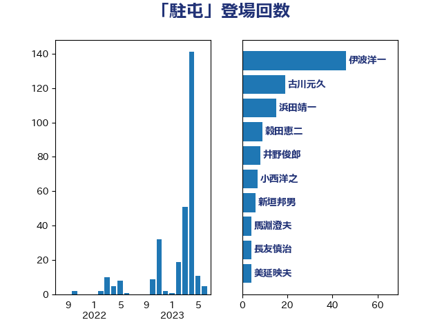

単語「駐屯」

| 伊波洋一 | 無所属 | 46 回 |
| 古川元久 | 国民民主党 | 19 回 |
| 浜田靖一 | 自由民主党 | 15 回 |
| 穀田恵二 | 日本共産党 | 9 回 |
| 井野俊郎 | 自由民主党 | 8 回 |
| 小西洋之 | 立憲民主党 | 7 回 |
| 新垣邦男 | 立憲民主党 | 6 回 |
| 馬淵澄夫 | 立憲民主党 | 4 回 |
| 長友慎治 | 国民民主党 | 4 回 |
| 美延映夫 | 日本維新の会 | 4 回 |
| 杉本和巳 | 日本維新の会 | 4 回 |
| 堀井巌 | 自由民主党 | 4 回 |
| 佐藤正久 | 自由民主党 | 4 回 |
| 萩生田光一 | 自由民主党 | 3 回 |
| 小野田紀美 | 自由民主党 | 3 回 |
| 伊藤俊輔 | 立憲民主党 | 3 回 |
| 赤嶺政賢 | 日本共産党 | 2 回 |
| 荒井優 | 立憲民主党 | 2 回 |
| 猪瀬直樹 | 日本維新の会 | 2 回 |
| 渡辺周 | 立憲民主党 | 2 回 |
| 浅川義治 | 日本維新の会 | 2 回 |
| 東国幹 | 自由民主党 | 2 回 |
| 斎藤洋明 | 自由民主党 | 2 回 |
| 岩谷良平 | 日本維新の会 | 2 回 |
| 小野寺五典 | 自由民主党 | 2 回 |
| 小池晃 | 日本共産党 | 2 回 |
| 小森卓郎 | 自由民主党 | 2 回 |
| 吉良よし子 | 日本共産党 | 2 回 |
| 住吉寛紀 | 日本維新の会 | 2 回 |
| 仁比聡平 | 日本共産党 | 2 回 |
| 鬼木誠 | 立憲民主党 | 1 回 |
| 高橋光男 | 公明党 | 1 回 |
| 音喜多駿 | 日本維新の会 | 1 回 |
| 鈴木英敬 | 自由民主党 | 1 回 |
| 鈴木庸介 | 立憲民主党 | 1 回 |
| 金城泰邦 | 公明党 | 1 回 |
| 西銘恒三郎 | 自由民主党 | 1 回 |
| 若林洋平 | 自由民主党 | 1 回 |
| 芳賀道也 | 国民民主党 | 1 回 |
| 緒方林太郎 | 無所属 | 1 回 |
| 紙智子 | 日本共産党 | 1 回 |
| 福山哲郎 | 立憲民主党 | 1 回 |
| 神津たけし | 立憲民主党 | 1 回 |
| 田村貴昭 | 日本共産党 | 1 回 |
| 片山さつき | 自由民主党 | 1 回 |
| 櫻井周 | 立憲民主党 | 1 回 |
| 木村次郎 | 自由民主党 | 1 回 |
| 岸田文雄 | 自由民主党 | 1 回 |
| 岩本剛人 | 自由民主党 | 1 回 |
| 山添拓 | 日本共産党 | 1 回 |
| 山岸一生 | 立憲民主党 | 1 回 |
| 小泉進次郎 | 自由民主党 | 1 回 |
| 宮本徹 | 日本共産党 | 1 回 |
| 大塚耕平 | 国民民主党 | 1 回 |
| 勝部賢志 | 立憲民主党 | 1 回 |
| 上川陽子 | 自由民主党 | 1 回 |
| おおつき紅葉 | 立憲民主党 | 1 回 |